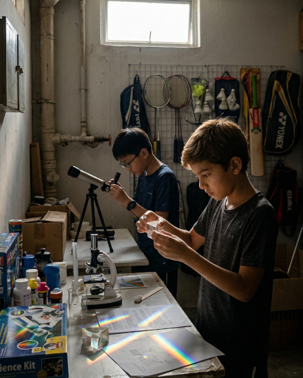

Your child spends P1 and P2 building language and number foundations. Then P3 arrives — and suddenly there is a new subject, five themes, a marking scheme, and a way of writing answers that school simply does not have time to drill. Science at PSLE is not just about knowing facts. It is about using them precisely, in the language examiners are trained to reward.

MOE organises the entire P3–P6 Science curriculum across five themes. Understanding the theme behind each topic helps children connect ideas across years.
Living vs non-living things, types of animals and plants, classification, and diversity of materials. Builds the ability to observe and compare systematically.
Life cycles of animals and plants, the water cycle, states of matter, and reproduction. Understanding that patterns of change repeat helps students predict natural events.
Plant systems, human digestive, respiratory, and circulatory systems, and electrical systems. Questions always ask how each part's function contributes to the whole.
From 2024, each primary level has its own dedicated Science syllabus — there is no longer a shared "lower block."
Science is a new subject at P3. The vocabulary of classification, characteristics, and functions must be learnt from the start.
P4 introduces the first "systems" — plant parts and human digestion — which require students to name parts and describe functions.
P5 is the most content-dense Science year. Reproduction, water cycle details, two body systems, electrical systems, and photosynthesis.
P6 Science is dominated by forces and ecology. PSLE open-ended questions require precise vocabulary and the CER structure.
Most students know the content. The ones who lose marks write the right idea in the wrong structure. PSLE Science open-ended answers must follow Claim → Evidence → Reasoning to score full marks.
A direct answer to the question. No hedging. No "I think." One clear statement of what happened or why.
Data or observations from the question that support the claim. Must reference the specific information provided.
The science concept that explains WHY the evidence supports the claim. This is where PSLE marks are won or lost.
"Because Pot A had more sunlight and sunlight helps plants grow."
No evidence from the table. No mechanism explained.
"Plant A grew taller because it received more sunlight. The table shows Pot A reached 24 cm while Pot B reached only 15 cm. Sunlight provides energy for photosynthesis..."
Claim stated clearly. Evidence cited. Reasoning linked.
MCQ with wrong-answer explanations. Open-ended with CER coaching. Miss Wena as your child's personal Science tutor. 7-day free trial — no credit card required.